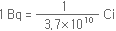
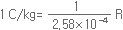
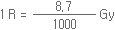

기초지식
방사선의 종류 및 단위
원자를 구성하는 양성자, 중성자, 전자가 균형을 이루지 못할 때 방사선을 낼 수 있는 능력 (방사능)을 갖게 되는데, 이러한 물질을 방사성물질이라고 한다. 그리고 방사성물질에서 나오는 일종의 에너지를 방사선이라고 한다. 물리학적으로 보면 방사선은 불안정한 원소가 안정된 원소로 되면서 방출하는 전자파로서 물질을 투과할 수 있는 힘을 가진 광선과 같은 것이다. 이러한 방사선에는 엑스 (χ)선, 알파 (α)선, 베타 (β)선, 감마 (γ)선 등이 있으며, 종류에 따라 투과력이 다르다.
- 01
방사선과 방사능
- 02
방사능 단위
- 03
방사선과 방사능의 단위
방사선과 방사능
알파선
알파선은 입자이기 때문에 알파입자라고도 한다. 이 입자는 베타선보다 수천 배나 무겁고 크기도 훨씬 작아 종이 한장으로도 막을 수 있다. 공기중에서도 몇 cm 정도 밖에 날아가지 못한다.
베타선
베타선은 전자의 흐름으로 알려져 있다. 또한 그 속도가 매우 빨라서 빛의 속도에 가까운 것까지 있다. 베타선은 속도는 빠르지만 전기를 띤 입자이기 때문에 물질 속에서 정전기력을 받으므로 투과력은 그다지 강하지 않다.
감마선
감마선은 엑스선이나 빛과 같은 전자기파이다. 전파보다 가시광선, 가시광선보다 엑스선, 엑스선보다 감마선의 파장이 더 짧다. 물질을 투과하는 능력이 보통 엑스선보다 훨씬 강하다는 것이 특징이다.
중성자선
중성자선은 알파선이나 베타선 또는 양성자선과 같이 입자선이지만 전기를 띠고 있지 않으므로 물질 속을 비교적 멀리까지 지나갈 수 있다. 따라서 두꺼운 콘크리트 등으로 차폐물을 설치해야 한다.
방사능 단위
방사능은 어떤 물질 중의 방사성핵종이 단위시간 내에 몇 번 붕괴를 일으키는가를 나타내는 것이다. 이는 물질 가운데 함유된
방사성핵종의 양과 반감기에 의해 결정된다.
방사능량의 단위는 예전에는 Ci(큐리)가 사용되어 왔으나 국제도량형총회의 결의에 따라 Bq(베크렐)을 사용한다.
베크렐(Bq)
주목되는 핵종의 방사능을 단위시간 당 붕괴하는 원자수로 표시한다. 국제단위로는 방사능의 발견자로 알려진 베크렐(Antoine Henri Bequerel, 프랑스,1852~1908)의 이름을 따서 베크렐(Bq)로 하고, 매초 1개의 붕괴수(Disintegration Per Second : DPS)를 1Bq로 한다.
큐리 (Ci)
라듐을 발견한 여성물리학자 마리 퀴리(Marie Curie, 1867~1934)의 이름을 따서 명명됐다. 현재 보조단위로 사용된다.
입자방출률
단위시간에 방출되는 입자의 방출수(/s)로 나타낸다.
입자플루언스 (Ci)
어떤 장소를 통과하는 단위면적당의 방사선 입자수.
흡수선량
어떤 장소에서 어떤 물질에 흡수된 방사선에너지량. 구단위계에서는 방사선의 통과에 의해 주목 물질 1 g 중에 100 erg가 흡수되는 것을 rad(라드)로 표시해 왔으나 현재는 Gy(그레이)를 사용한다(1 Gy = 100 rad).
조사선량
방사선의 통과에 의해 발생한 전하량을 기준으로 하는 개념. 표준상태(0℃, 760 mmHg)의 건조공기 1cc 중에 1esu의 전하가 발생하는 경우를 구단위계에서는 1R (뢴트겐)으로 한다.
선량당량 및 실효선량당량
신체의 일부 또는 장기에 그 부위가 받게 되는 흡수선량에 방사선의 종류와 에너지를 고려해 결정한 선질계수 QF를 곱한 양을 선량당량이라 한다. 단위는 rem(렘, 구단위계)과 Sv(시버트, 신단위계, 1 Sv=100 rem)를 사용한다.
방사선과 방사능의 단위
| 방사능 | 방사선 | |||
|---|---|---|---|---|
| 조사선량 | 흡수선량 | 피폭방사선량 | ||
| 의미 | 방사성 물질의 양을 표시 (방사능의 세기) |
공기의 단위부피에 발생된 전하량(Χ, γ선에 적용) |
물질의 단위질량에 흡수된 방사선에너지 |
사람이 받은 방사선의 양 |
| 국제 단위 | 베크렐 Bq |
쿨롱/킬로그램 C/kg |
그레이 Gy |
시버트 Sv |
| 과거 단위 | 큐리 Ci |
렌트겐 R |
라드 rad |
렘 rem |
| 비고 |

※ 1초에 1개의 원자핵이 붕괴하는 방사능량을 1 Bq로 정의 |
 ※ 공기에 대하여  | 1 Gy = 100 rad | 1 Sv = 100 rem |